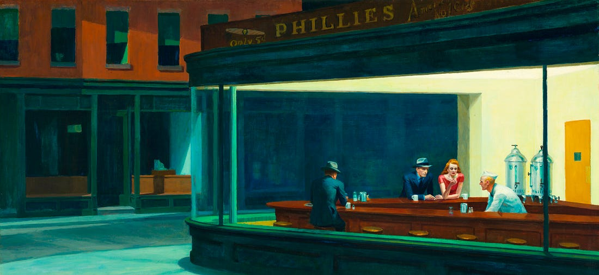

On ne se voit pas vieillir. On ne devient pas proche de quelqu’un à un instant précis. On ne perd pas confiance en soi un mardi matin. Une relation ne se dégrade pas nécessairement le jour d’une dispute parce que la vaisselle n’a pas été lavée.
Et pourtant, toutes ces choses arrivent. Certaines de nos transformations sont aussi celles que l’on perçoit le moins.
Ce sont des “ transformations silencieuses”, elles ont lieu sous nos yeux, mais elles sont trop lentes, trop continues et pas assez quantifiable pour que l’on puisse isoler le moment où quelque chose change. On n’en constate souvent que le résultat.
C’est cette idée que j’ai envie d’explorer ici, avec une question assez simple : si une partie importante de ce qui façonne notre vie agit silencieusement, de quoi s’agit-il vraiment et avons-nous intérêt à apprendre à le percevoir ?
L’événement et la transformation
Nous sommes très bons pour voir les événements. Une rencontre. Une rupture. Une promotion. Une blessure. Une victoire.
L’événement possède quelque chose de confortable : il a une date, parfois une cause et un responsable. Il permet de raconter une histoire avec un avant et un après. La transformation fonctionne différemment.
Le philosophe François Jullien oppose dans son essai Les transformations silencieuses, à ce titre l’action et la transformation. L’action est locale, momentanée, visible. Quelqu’un fait quelque chose et cette action produit un résultat. La transformation, elle, est progressive, globale et s’inscrit dans la durée. Elle ne se détache pas suffisamment du cours des choses pour attirer notre attention.
Cette distinction s’inscrit chez lui dans un écart plus large entre deux traditions de pensée. La pensée grecque s’est construite autour d’une exigence particulièrement puissante : déterminer. Dire ce qu’est une chose, la distinguer d’une autre, identifier un sujet et lui attribuer des propriétés.
Cette structure se retrouve jusque dans notre langage qui est prédicatif : un sujet sert de support auquel viennent s’attribuer différentes qualités. Cette manière de penser est extrêmement efficace pour identifier ce qui est. Elle l’est moins pour saisir ce qui est en train de devenir.
La force des petits écarts
Le sport illustre bien cette idée. Une séance de course ne transforme presque rien. Si je vais courir aujourd’hui, je ne serai pas fondamentalement plus endurant demain. Mon corps n’aura pas changé de manière perceptible.
Et pourtant, si je répète cette séance plusieurs centaines de fois, il devient impossible de prétendre qu’il ne s’est rien passé. Quelle séance m’a transformé ? Aucune. Et toutes.
Le problème est que cette logique fonctionne aussi dans l’autre sens. Une mauvaise nuit de sommeil n’est pas très grave. Passer une heure de trop sur son téléphone non plus. Manger mal un soir n’a probablement aucune conséquence importante. Ce soir, ce n’est pas grave. Et c’est vrai.
Les transformations silencieuses, bonnes ou mauvaises, sont toujours constituées de centaines de répétitions qui avec le temps ont de grandes conséquences.
Le biais du mesurable
Nous accordons naturellement plus d’attention à ce que nous pouvons isoler et mesurer. L’argent en est probablement l’exemple le plus évident. Un salaire possède un chiffre. Un patrimoine aussi. On peut les comparer, suivre leur évolution, constater précisément si l’on possède plus ou moins qu’un an auparavant.
Le bonheur n’a pas cette propriété. Une amitié non plus. Il n’existe pas de relevé mensuel qui indique que ma relation avec un ami s’est améliorée de 12 % cette année. Pourtant, personne ne prétendrait sérieusement que ces choses comptent moins.Elles sont simplement plus difficiles à saisir.
Le problème apparaît alors lorsque la facilité avec laquelle une chose se mesure a tendance à déterminer l’importance qu’on lui accorde. Un salaire, une note, un chrono, un poids sont faciles à suivre. La qualité d’une relation, notre confiance en nous, notre sérénité ou notre présence sont des choses qui évoluent beaucoup plus silencieusement
Les relations silencieuses
C’est probablement dans nos relations que cette idée me frappe le plus. Deux personnes qui « ne s’aiment plus » n’ont pas nécessairement connu d’instant précis où leur amour aurait disparu.
Il y a eu des conversations un peu moins longues. Des gestes qui ont manqué une fois, puis plusieurs fois. Des silences. Des évitements. Une irritation devenue progressivement plus fréquente. François Jullien utilise précisément cet exemple. Ce qui apparaît finalement comme une rupture est l’aboutissement visible d’une érosion beaucoup plus ancienne. La dispute n’est alors pas nécessairement la cause du problème. Elle est la facture, présentée d’un coup après des mois de crédit accumulé sans qu’on en tienne le compte.

Mais l’inverse est tout aussi vrai. On ne devient pas profondément ami avec quelqu’un à un instant précis. Une discussion, puis une autre. Une confiance accordée. Un service rendu. Des souvenirs communs. Une présence dans un moment difficile. Et un jour, sans vraiment savoir quand la transformation a eu lieu, cette personne est devenue essentielle.
Le piège de la lucidité
Mais il y a un danger dans ce raisonnement qu’il faut nommer. Si tout nous transforme silencieusement, faut-il commencer à tout surveiller ? Analyser chaque interaction. Mesurer son sommeil, son humeur, ses relations. Se demander après chaque décision ce qu’elle est en train de faire de nous.
Je ne le pense pas.
Ce serait même probablement une manière assez pénible de vivre. On ne peut pas vivre et se regarder vivre en permanence. Une amitié a aussi besoin de ne pas être évaluée chaque semaine. Le sport peut être pratiqué simplement parce qu’on aime courir. Certaines expériences ont besoin d’être vécues avant d’être comprises. Surtout, vouloir tout quantifier reviendrait exactement au problème évoqué précédemment : croire qu’une chose ne devient réelle ou importante qu’à partir du moment où elle peut être mesurée.
Conclusion
Je ne pense pas qu’il faille essayer de rendre visible tout ce qui ne l’est pas. Certaines choses ont besoin de temps. Certaines ont besoin d’être vécues sans être immédiatement analysées. Et certaines ne pourront probablement jamais être correctement mesurées.
Mais je pense qu’il y a un intérêt à apprendre à éduquer notre attention. À moins regarder uniquement les événements et davantage les trajectoires.
Notre vigilance devrait notamment porter sur les dispositions dans lesquelles nous vivons, sur l’environnement que nous construisons et sur les personnes que nous fréquentons. Sont-ils alignés avec la personne que nous pensons être et avec celle que nous voulons devenir ?
Si nous parvenons à maîtriser cet alignement, alors notre environnement et nos relations forment un écosystème sain. Et cet écosystème nous transforme silencieusement, de la bonne manière.
À bientôt pour de nouvelles réflexions
Elouan